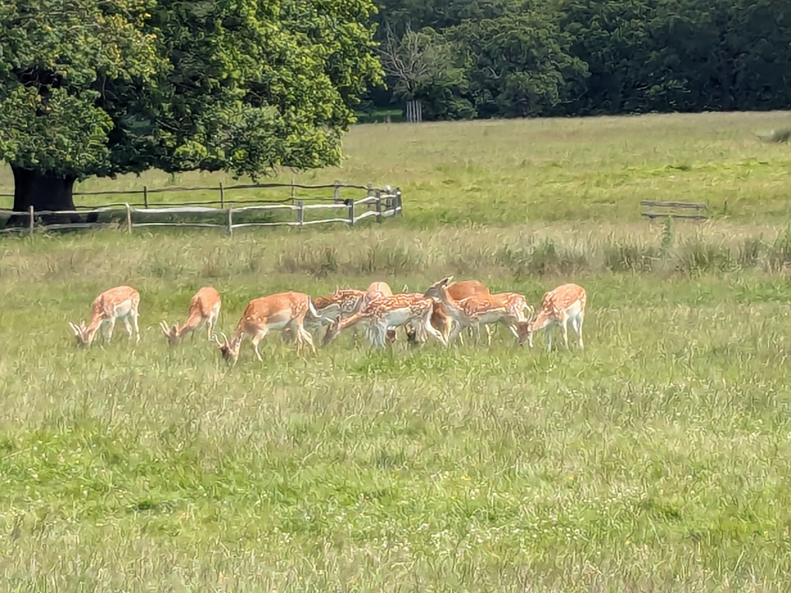

3 / 20
❮
❯

Llandaff Cathedral, Cardiff where Normans have worshipped since the 6th century of our Lord


7 / 20
❮
❯
Victorian mansion within the walls of Cardiff Castle commissioned by the 3rd Marquess of Bute
8 / 20
❮
❯

Beautiful Tenby by the sea overlook in front of our hotel looking at St. Catherine's Island
13 / 20
❮
❯

Caldey Island horse and Chelsea bonding by Red Berry Bay where puffins are known to roost
15 / 20
❮
❯

St. David's Church at Caldey Island dating back to its founding by Saint Pyr in the 6th century
16 / 20
❮
❯

At Richmond Park, London Henry VIII once hunted this lineage of deer on royal hunting trips (excite!)
18 / 20
❮
❯

View of the Thames from the Terrace Gardens in Richmond, London made famous as a filming location of Ted Lasso